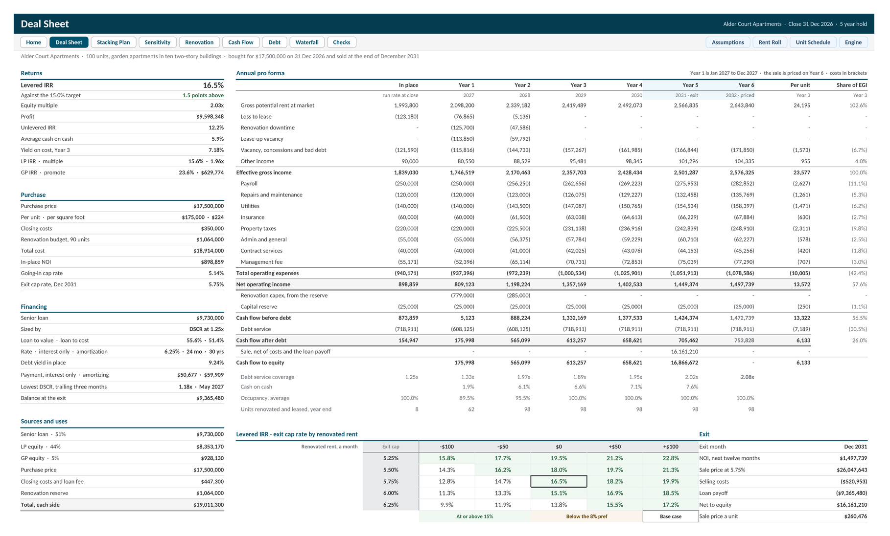

Multifamily Value Add Acquisition Model
A thirteen tab Excel workbook, with a Google Sheets version, that underwrites a value add apartment acquisition one unit at a time. Each unit is renovated when its lease ends, as fast as the crew allows, and the model follows it month by month through downtime and lease up to the renovated rent, then sizes the loan, prices the exit, and splits the returns between investors and sponsor. 19 built in checks sit underneath.

The sample is Alder Court Apartments, a fictional 100 unit garden property in ten two story buildings, bought for $17.5M at the end of 2026 and sold after five years. The rent roll lists every unit with its building, floor, type, lease dates, and in place rent. Eight units were renovated by the seller and two are kept classic. The other 90 join a queue the month after their leases end, and the crew starts at most six a month. Each unit is offline for a month of work, vacant for a month of lease up, then leased at the renovated rent, and the Unit Schedule records its state in every one of the 97 months.
The Deal Sheet is the investment committee page: returns against the 15% target, purchase, financing, sources and uses, an annual pro forma from in place through the year the sale is priced on, a levered IRR grid, and the exit. The Stacking Plan draws every unit by building and floor as it stands at the end of any month you pick, with its rent or the reason it has none, and lists the next units the crew will reach.
Revenue is built from the units: gross potential rent at market, loss to lease, renovation downtime, and lease up vacancy, then vacancy, concessions, and bad debt. The loan is sized on in place NOI the way a lender sizes it, the smallest of the loan to value, DSCR, and debt yield limits, with interest only months and coverage tested every month through the renovation. The sale is priced on the twelve months of NOI after the exit. IRRs run on the monthly cash flows, and the waterfall pays an 8% preferred return, then 80/20 to a 15% LP IRR, then 70/30.
Sensitivity reruns all 97 months of equity cash flow for every cell of three grids, levered IRR by exit cap rate and renovated rent, levered IRR by exit cap rate and hold, and the equity multiple, so each grid lands exactly on the Deal Sheet at its base case. A Checks tab runs 19 tests, from sources against uses and levered profit against unlevered profit less the loan fee and interest, to rent roll warnings and units the crew never reaches. Alder Court Apartments is fictional and every figure is illustrative.